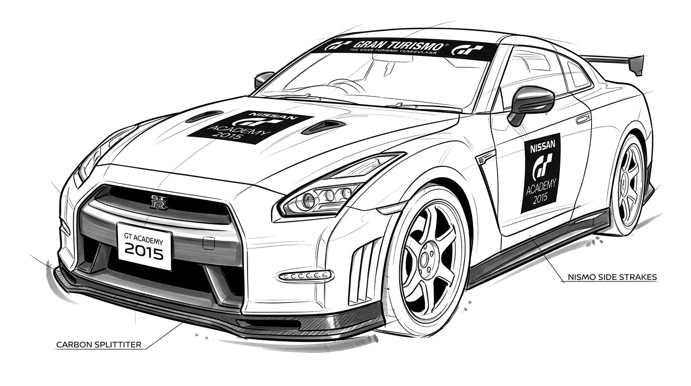

BIENVENIDO A LA GT ACADEMY
El campeonato oficial de simracing en Gran Turismo 6 (PS3). Salas privadas online, estricta paridad técnica PR 550 y espíritu FIA World Endurance Championship.
REGLAMENTO Y FILOSOFÍA PARIDAD TÉCNICA PR 550
Sin ventajas mecánicas ni categorías artificiales. En pista solo compite la destreza de tus manos bajo idénticas condiciones de simulación.
Parrilla Abierta
Sin divisiones de bronce o plata. Tu reputación y respeto se forjan curva a curva con podios y constancia.
Sin Ayudas
Límite estricto de 550 Puntos de Rendimiento, neumáticos de competición y prohibición de asistencias (TCS=0, solo ABS=1).
Telemetría WEC
Diferencias en milésimas de segundo, cronometraje oficial en vivo y palmarés histórico actualizado en base de datos.
CALENDARIO OFICIAL GT6 CIRCUITOS DE LEYENDA
14 rondas de competición en los trazados más exigentes del mundo y los circuitos clásicos de Gran Turismo.


PADDOCK Y COMUNIDAD 37 PILOTOS EN PISTA
Consulta las fichas de telemetría de cada piloto, tiempos de clasificación y únete a las salas privadas oficiales en Discord.